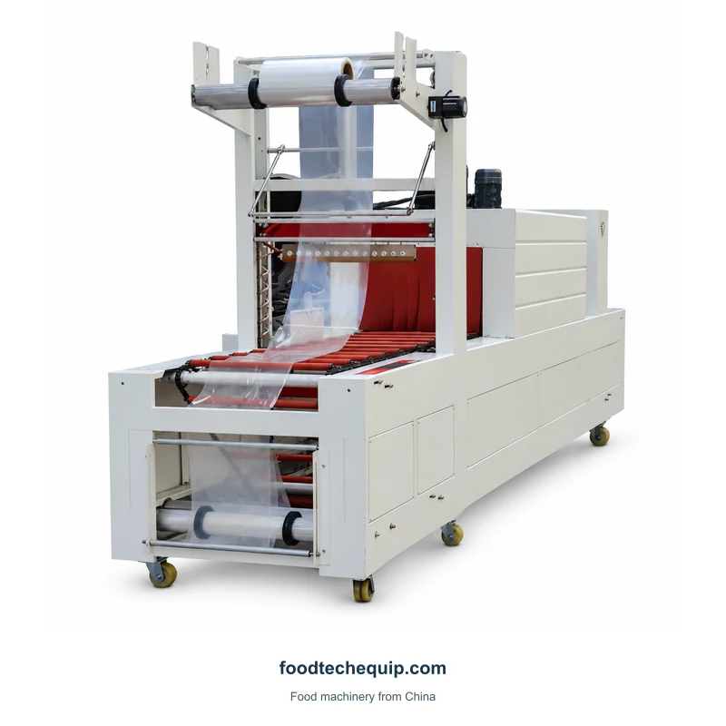

เครื่องบรรจุฟิล์มหด
เครื่องหุ้มฟิล์มหดพร้อมสายพานและอุโมงค์
เครื่องบรรจุฟิล์มหดพร้อมชุดป้อนฟิล์ม สายพานลำเลียง และอุโมงค์หด
ดูอุปกรณ์เลือกอุโมงค์ฟิล์มหดหรือชุดซีลพร้อมหดฟิล์มจากขนาดหีบห่อจริง ชนิดฟิล์ม และลำดับการลำเลียง

เครื่องบรรจุฟิล์มหดพร้อมชุดป้อนฟิล์ม สายพานลำเลียง และอุโมงค์หด
ดูอุปกรณ์
ปิดผนึกฟิล์มและหดสายบรรจุภัณฑ์ด้วยสายพานลําเลียงและส่วนอุโมงค์
ดูอุปกรณ์
ปิดผนึกฟิล์มและหดสายบรรจุภัณฑ์ที่มีผู้ถือม้วน, สายพานลําเลียงและหดอุโมงค์
ดูอุปกรณ์
เครื่องบรรจุฟิล์มหดแบบอุโมงค์ มีช่องสายพาน ตัวครอบสีส้ม และฐานติดล้อ
ดูอุปกรณ์
เครื่องบรรจุฟิล์มหดแบบห้องพร้อมช่องมองและส่วนลูกกลิ้ง
ดูอุปกรณ์
สายซีลปลอกฟิล์มและบรรจุฟิล์มหดพร้อมที่รองม้วนฟิล์มและสายพานผ่านอุโมงค์
ดูอุปกรณ์ลองใช้คําหลักอื่นหรือล้างตัวกรองของคุณ
จัดเตรียมรายการหรือขนาดรวมที่สมบูรณ์รวมถึงถาดและการสนับสนุน ระบุว่าคุณต้องการอุโมงค์เท่านั้นหรือการจัดเรียงฟิล์มและการหดตัวแบบรวม
ระบุฟิล์มที่ตั้งใจและการนําเสนอเสร็จแล้วจากนั้นอธิบายการโหลดการปล่อยและการจัดหาไฟฟ้าสําหรับการกําหนดค่าที่เลือก
| เลือกพื้นที่ | เกณฑ์เปรียบเทียบ | สิ่งที่จะให้ |
|---|---|---|
| ปิดผนึก | ปิดฟิล์มก่อนหดตัว | ขั้นตอนการปิดผนึกที่มีอยู่หรือขอบเขตที่ร้องขอ |
| อุโมงค์ | รายการที่สมบูรณ์ผ่าน | ซองแพ็คสูงสุดรวมถึงถาด |
| โอนเงิน | การโหลดและการปลดปล่อย | สนับสนุนความสูงในการทํางานและการเข้าถึงผู้ประกอบการ |
หดห่อปิดกล่องและรัดเป็นงานจัดส่งบรรจุภัณฑ์แยกต่างหาก แสดงแพคเกจที่ป้อนและออกจากแต่ละขั้นตอนที่ต้องการรวมถึงการถ่ายโอนระหว่างสถานี